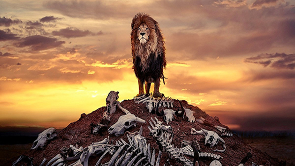
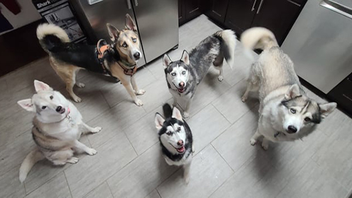
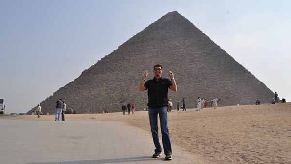
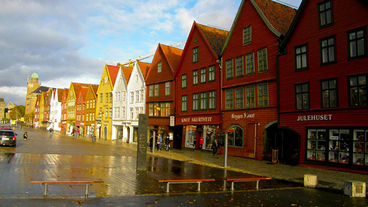
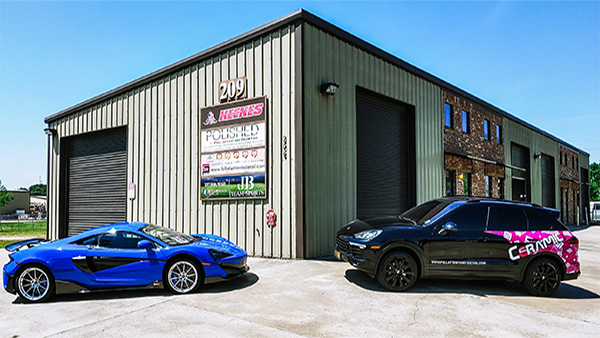
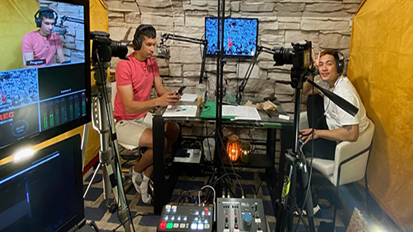

Tim has his online presence as "Tehm," which is pronounced the same.
CLICK AN IMAGE AND REVEAL SOME INFO!
Below are some of the requirements of week three's Assessment that may lead to a pretty dope grade!
Tim's favorite color is a runoff between Pink or Red.

Born in 1978, son of two Army Veterans, Tim was born. He also served in the U.S. Navy and after his service overcame obstacles decade by decade learning lessons along the way. He is far from perfect but strives for better each day.

In 2011, rescued his first Siberian Husky. In 2019 founded Louisiana Husky Rescue. Currently has 5 Siberian huskies of his own.

Well traveled the globe. Been to 5 of 7 continents and have visited over 17 countries. Lived in Norway and South Korea for extended periods up to 4 years in one period of time.

NORWAY is where Tim's heart remains. He fell in love on his first trip to Kristiansand in 2010 and would love to retire north of Stavanger in the mountains with a pack of huskies to play in the snow with.
Biggest achievement in Tim's career was becoming a Drilling Systems Engineer for Chevron. He was a part of the entire build of a technologically advanced Ultra Deepwater Drillship that can drill water depths of 20,000'. His title put him in charge of the assembly, installation, commissioning and conditional acceptance of a 400M$ drilling package.

In 2012, Tim started an automotive detailing business from home, turning a hobby into what is now a full-time business that provides only the highest quality of automotive correction and ceramic coating installation services. POLISHED by:Full Attention to Detail has eight local awards and one North American Business award for being an innovative leader in the industry!

At the beginning of the COVID-19 pandemic in 2020, Tim started a podcast called "intersections(IPE)." The purpose of the podcast was to help other small businesses share their audiences with the huge following that POLISHED by:Full Attention to Detail built over near a decade. Tim felt this would be true b2b networking where the audience learns the genuine side of each guest on the show.
2021 brought major life changes that has led to Tim being accepted into a very limited sponsored coding bootcamp being hosted by DevMountain & Hackbright with potential for Tim to be direct hired on with Perficient. Technology is the future and Tim's heavy background in a technical field will be a great asset to any company that signs him on.